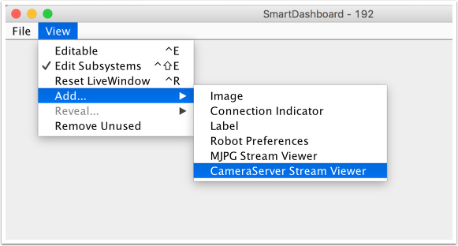

Using the CameraServer on the roboRIO
Simple CameraServer Program
The following program starts automatic capture of a USB camera like the Microsoft LifeCam that is connected to the roboRIO. In this mode, the camera will capture frames and send them to the dashboard. To view the images, create a CameraServer Stream Viewer widget using the “View”, then “Add” menu in the dashboard. The images are unprocessed and just forwarded from the camera to the dashboard.
 7import edu.wpi.first.cameraserver.CameraServer;
8import edu.wpi.first.wpilibj.TimedRobot;
9
10/**
11 * Uses the CameraServer class to automatically capture video from a USB webcam and send it to the
12 * FRC dashboard without doing any vision processing. This is the easiest way to get camera images
13 * to the dashboard. Just add this to the robotInit() method in your program.
14 */
15public class Robot extends TimedRobot {
16 @Override
17 public void robotInit() {
18 CameraServer.startAutomaticCapture();
19 }
20}
#include <cameraserver/CameraServer.h>
#include <frc/TimedRobot.h>
class Robot : public frc::TimedRobot {
public:
void RobotInit() override {
frc::CameraServer::StartAutomaticCapture();
}
};
#ifndef RUNNING_FRC_TESTS
int main() {
return frc::StartRobot<Robot>();
}
Advanced Camera Server Program
In the following example a thread created in robotInit() gets the Camera Server instance. Each frame of the video is individually processed, in this case drawing a rectangle on the image using the OpenCV rectangle() method. The resultant images are then passed to the output stream and sent to the dashboard. You can replace the rectangle operation with any image processing code that is necessary for your application. You can even annotate the image using OpenCV methods to write targeting information onto the image being sent to the dashboard.
7import edu.wpi.first.cameraserver.CameraServer;
8import edu.wpi.first.cscore.CvSink;
9import edu.wpi.first.cscore.CvSource;
10import edu.wpi.first.cscore.UsbCamera;
11import edu.wpi.first.wpilibj.TimedRobot;
12import org.opencv.core.Mat;
13import org.opencv.core.Point;
14import org.opencv.core.Scalar;
15import org.opencv.imgproc.Imgproc;
16
17/**
18 * This is a demo program showing the use of OpenCV to do vision processing. The image is acquired
19 * from the USB camera, then a rectangle is put on the image and sent to the dashboard. OpenCV has
20 * many methods for different types of processing.
21 */
22public class Robot extends TimedRobot {
23 Thread m_visionThread;
24
25 @Override
26 public void robotInit() {
27 m_visionThread =
28 new Thread(
29 () -> {
30 // Get the UsbCamera from CameraServer
31 UsbCamera camera = CameraServer.startAutomaticCapture();
32 // Set the resolution
33 camera.setResolution(640, 480);
34
35 // Get a CvSink. This will capture Mats from the camera
36 CvSink cvSink = CameraServer.getVideo();
37 // Setup a CvSource. This will send images back to the Dashboard
38 CvSource outputStream = CameraServer.putVideo("Rectangle", 640, 480);
39
40 // Mats are very memory expensive. Lets reuse this Mat.
41 Mat mat = new Mat();
42
43 // This cannot be 'true'. The program will never exit if it is. This
44 // lets the robot stop this thread when restarting robot code or
45 // deploying.
46 while (!Thread.interrupted()) {
47 // Tell the CvSink to grab a frame from the camera and put it
48 // in the source mat. If there is an error notify the output.
49 if (cvSink.grabFrame(mat) == 0) {
50 // Send the output the error.
51 outputStream.notifyError(cvSink.getError());
52 // skip the rest of the current iteration
53 continue;
54 }
55 // Put a rectangle on the image
56 Imgproc.rectangle(
57 mat, new Point(100, 100), new Point(400, 400), new Scalar(255, 255, 255), 5);
58 // Give the output stream a new image to display
59 outputStream.putFrame(mat);
60 }
61 });
62 m_visionThread.setDaemon(true);
63 m_visionThread.start();
64 }
65}
#include <cstdio>
#include <thread>
#include <cameraserver/CameraServer.h>
#include <frc/TimedRobot.h>
#include <opencv2/core/core.hpp>
#include <opencv2/core/types.hpp>
#include <opencv2/imgproc/imgproc.hpp>
/**
* This is a demo program showing the use of OpenCV to do vision processing. The
* image is acquired from the USB camera, then a rectangle is put on the image
* and sent to the dashboard. OpenCV has many methods for different types of
* processing.
*/
class Robot : public frc::TimedRobot {
private:
static void VisionThread() {
// Get the USB camera from CameraServer
cs::UsbCamera camera = frc::CameraServer::StartAutomaticCapture();
// Set the resolution
camera.SetResolution(640, 480);
// Get a CvSink. This will capture Mats from the Camera
cs::CvSink cvSink = frc::CameraServer::GetVideo();
// Setup a CvSource. This will send images back to the Dashboard
cs::CvSource outputStream =
frc::CameraServer::PutVideo("Rectangle", 640, 480);
// Mats are very memory expensive. Lets reuse this Mat.
cv::Mat mat;
while (true) {
// Tell the CvSink to grab a frame from the camera and
// put it
// in the source mat. If there is an error notify the
// output.
if (cvSink.GrabFrame(mat) == 0) {
// Send the output the error.
outputStream.NotifyError(cvSink.GetError());
// skip the rest of the current iteration
continue;
}
// Put a rectangle on the image
rectangle(mat, cv::Point(100, 100), cv::Point(400, 400),
cv::Scalar(255, 255, 255), 5);
// Give the output stream a new image to display
outputStream.PutFrame(mat);
}
}
void RobotInit() override {
// We need to run our vision program in a separate thread. If not, our robot
// program will not run.
std::thread visionThread(VisionThread);
visionThread.detach();
}
};
#ifndef RUNNING_FRC_TESTS
int main() {
return frc::StartRobot<Robot>();
}
#endif
Notice that in these examples, the PutVideo() method writes the video to a named stream. To view that stream on SmartDashboard or Shuffleboard, select that named stream. In this case that is “Rectangle”.